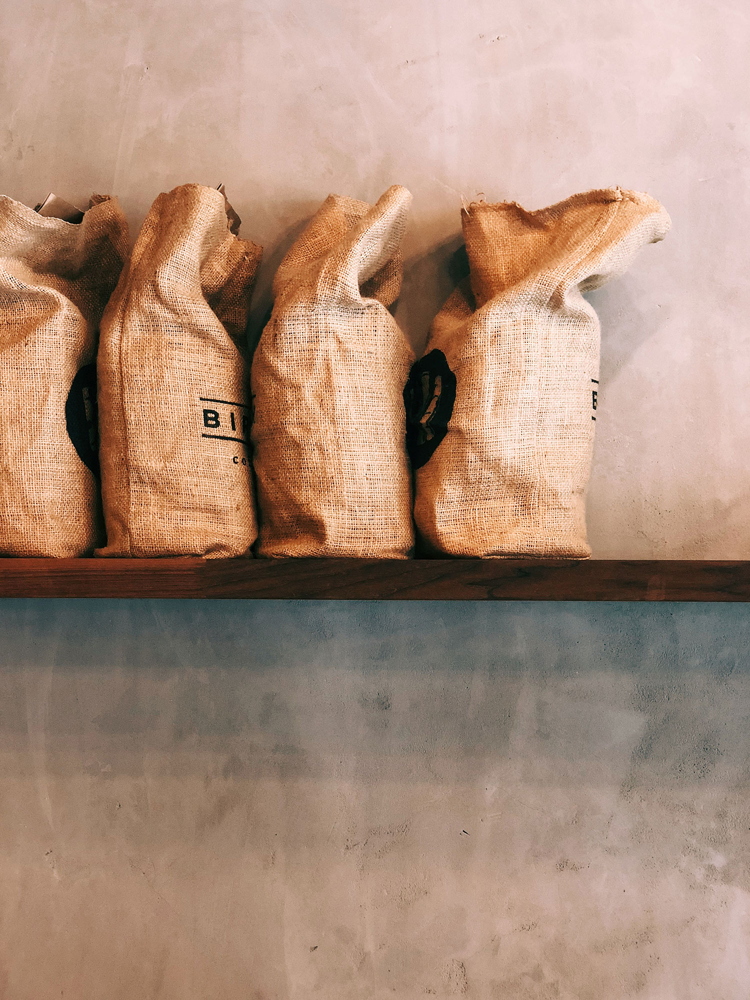

Rustica
Bio und Fair seit 1991

Rösterei & Café
Kaffee aus Kiel, direkt gehandelt und geröstet in der eigenen Rösterei, serviert im gemütlichen Café in der Innenstadt.
Komm uns Besuchen! Frauenhoferstr. 13, Kiel
Mo-Fr 8-18 Uhr Sa 11-18 Uhr

Bio und Fair
Weit hinten, hinter den Wortbergen, fern der Länder Vokalien und Konsonantien leben die Blindtexte. Weit hinten, hinter den Wortbergen, fern der Länder Vokalien und Konsonantien leben die Blindtexte. Und das alles in bester Bio Qualität

Entdecke unsere Kaffee Sorten
Herkunft
Weit hinten, hinter den Wortbergen, fern der Länder Vokalien und Konsonantien leben die Blindtexte.Und das alles in bester Bio Qualität
